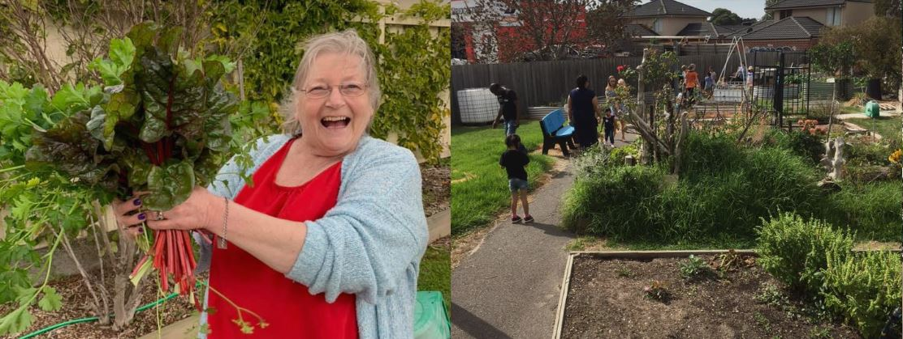

Welcome to Our Garden
The Hampton Park Uniting Place Community Garden is a thriving shared growing space where local residents come together to cultivate fruits, vegetables, herbs, and flowers. It is a place of beauty, productivity, and genuine community connection.
We believe that growing food together is one of the most grounding and life-giving things a community can do. The garden is open to people of all ages, backgrounds, and experience levels.
How It Works

The garden is divided into individual allocated plots which are leased to community members on a seasonal basis. Plot holders are responsible for tending their own plot and are encouraged to share knowledge, seeds, and produce with their fellow gardeners.
Individual Plots
Dedicated growing space allocated to individuals or families, subject to availability.
Shared Resources
Tools, composting facilities, water access, and shared knowledge are available to all plot holders.
Community Beds
Communal growing beds tended by volunteers, with produce used in our community lunch program.
Seasonal Working Bees
Regular working bees bring the community together to improve and maintain the shared garden spaces.
Getting Involved

We welcome new gardeners to join us. Plots are allocated on a first-come, first-served basis and are subject to availability. To register your interest or find out more, please complete the form below or contact us directly.
To register your interest in a garden plot:
Email: office@unitingplace.org
Phone: (03) 9799 7994
Or use our online contact form
Garden Working Bees
Our seasonal working bees are open to everyone — you don't need to have a plot to come along and get your hands dirty. Working bees are a great way to meet the gardening community and contribute to the shared spaces.
Working bee dates are posted in our weekly newsletter and on our events calendar. Check upcoming events ›
Garden and Sustainability
Our garden is managed using organic principles wherever possible. We compost food waste from our community kitchen, collect rainwater, and encourage biodiversity. The garden reflects our commitment to caring for God's creation and modelling sustainable living in our community.